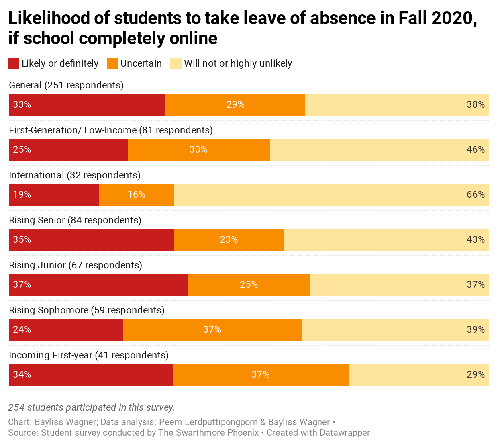
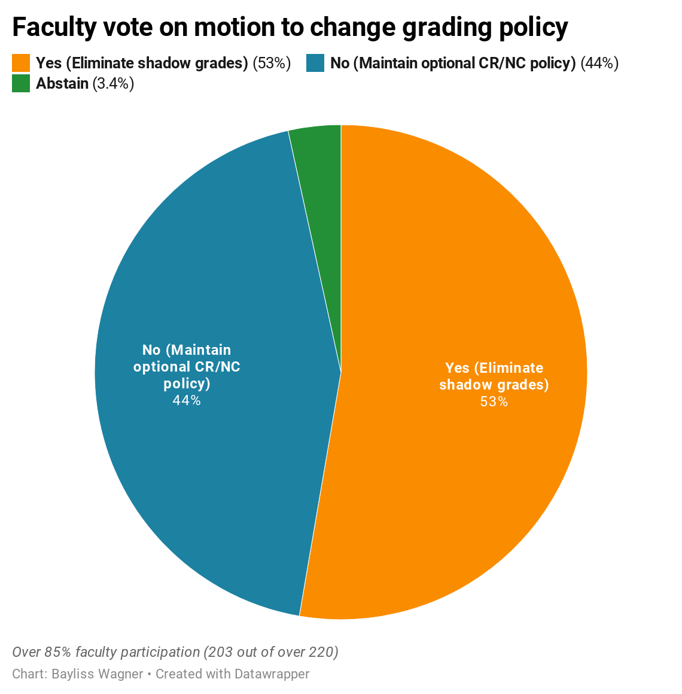

Audio, data reporting, & other stories
Bayliss Wagner
Survey: Awaiting Fall 2020 plan, students face housing uncertainty, safety concernsJune 30, 2020This data-driven story uses visualizations and a graphic layout along with student testimony to illustrate campus sentiment during this particularly odd and isolating period of time. See the full story |
(National) Cult of Misogyny: Leaked Internal Documents Reveal Silence Around Harmful Culture at Phi PsiApril 18, 2019
In spring 2019, I led an investigation into a set of explicit, misogynistic and racist documents that an anonymous source leaked to the school paper late one Thursday night. Before the story went national, we had 10 days to figure out how to verify that the documents were real and that they were, in fact, from a campus fraternity. We proved not only that the documents were written by fraternity members about fraternity events, but also that they were circulated openly among the members on a Swarthmore listserv. Read the full story |
Listeners of WAMU Project: Catherine WhiteAugust 24, 2016 |
Eliminating Letter Grades for Spring 2020: How It HappenedApril 30, 2020Investigation, with data visualizations, into how and why the College arrived at the decision to make all grades pass/fail for the Fall 2020 semester. Read the full story |
Brief: P.A. redistricting likely to amplify Swarthmore students’ voices in midterm election
"Under the 2011 Pennsylvania Congressional Redistricting Act, the Republican-majority Pa. General Assembly moved Swarthmore out of the 7th district, of which it had been a part for over 75 years, and into the 1st district, grouping it with reliably Democratic Philadelphia suburbs. Outside of a district so gerrymandered it has been nicknamed “Goofy Kicking Donald Duck,” the cutout of Swarthmore now outlines Goofy’s left arm, and at the neck of the peninsula-like shape that envelops the town, the 1st district is no wider than ½ mile..." Read the full story |
O4S occupies offices of Dean Braun and Dean Miller in ongoing protestMay 3, 2018
"At 9:15 a.m. on Tuesday, May 1, over 30 students filed into Dean of Students Liz Braun’s office on the first floor of Parrish Hall. As Braun rose from her seat, the students — members of Organizing for Survivors, a group that has protested Title IX handling at the college since early March — placed their backpacks on the floor beside them and announced their plans to stay there indefinitely." Read the full story |